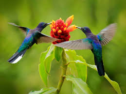

Colibri

Al momento de tener sus crías buscan áreas cálidas, pero pueden sobrevivir en temperaturas frías,
los colibríes realizan viajes de migración para lograr este objetivo. El hogar de los colibríes
puede establecerse en enredaderas, arbustos, y árboles, son protectores de su hogar y de las fuentes
de alimentación cercanas. Aunque los colibríes se alimentan principalmente del néctar de las flores
complementan su dieta con pequeños insectos y arañas que atrapan en el momento en que visitan la flor.
Se dice que un colibrí puede visitar de 500 a 3000 flores por día.
- Estas aves tienen el mayor metabolismo natural de todos los animales en el mundo.
- Ellos consumen hasta 3 veces su peso corporal en comida cada día.
- Los colibríes son muy territoriales, y se pelean entre sí por la comida y la ubicación.
- Estas aves desempeñan un papel muy activo en el proceso de polinización de las plantas de las que consumen néctar.
- Hay 16 especies de colibríes que se acoplan en los Estados Unidos.
Regresar al menu principal